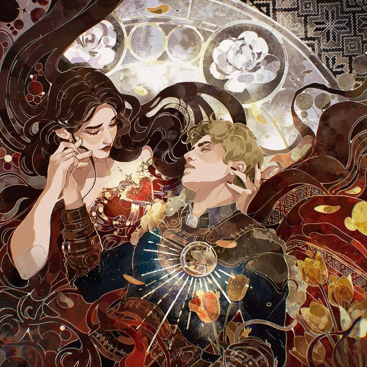
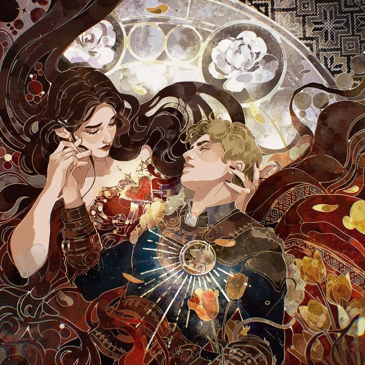
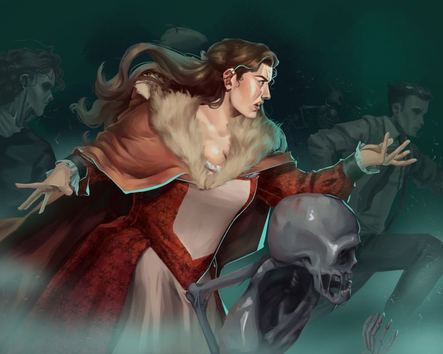
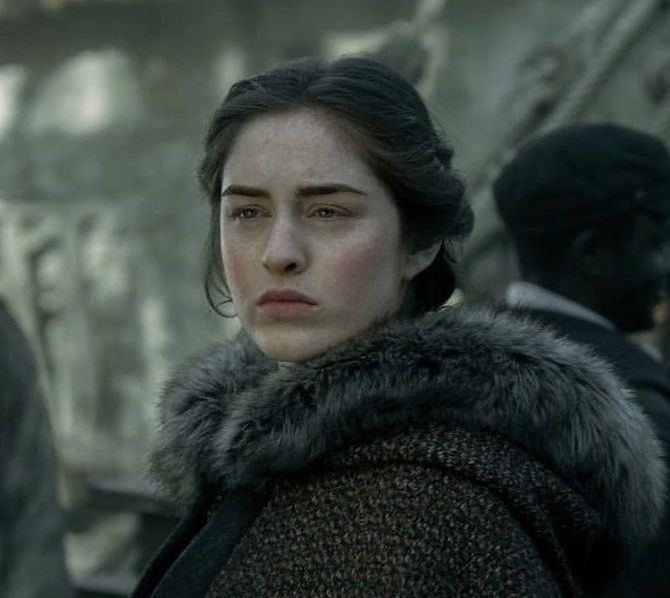
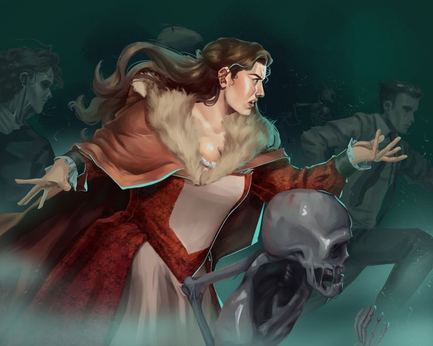
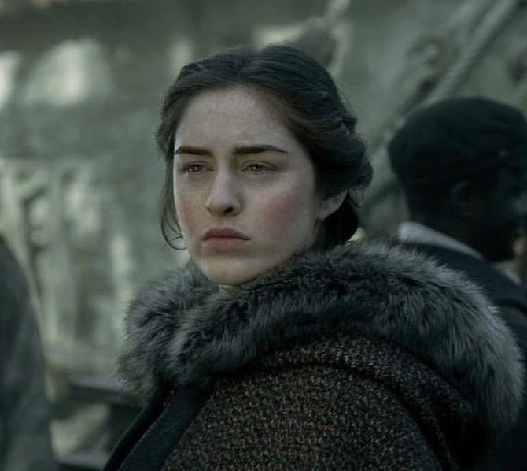
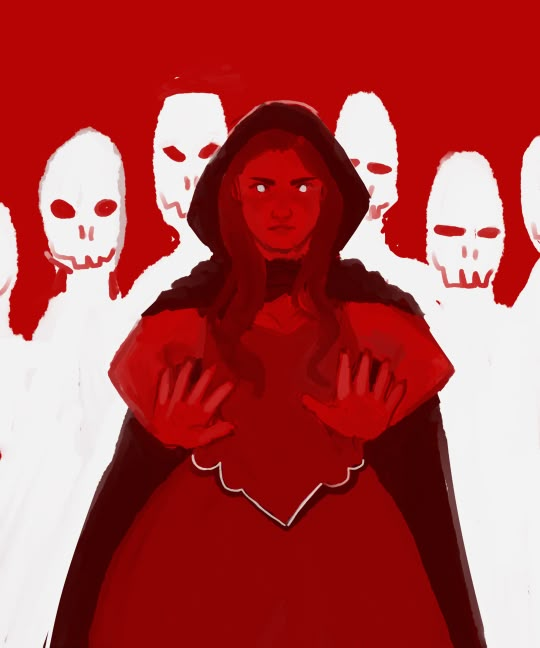
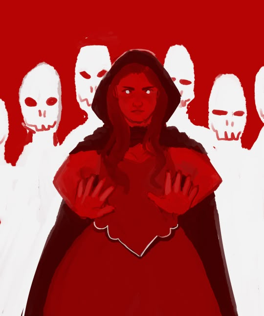

Нина Зеник
Сердцебит, гриша и огонь команды
Нина Зеник — могущественная сердцебит из Равки. Яркая, эмоциональная и живая, она не скрывает чувств и всегда говорит прямо, даже когда это опасно.

Внешний вид
У Нины длинные вьющиеся каштановые волосы и зеленые глаза. Она высокая и пышная, описанная как «щедро вырезанная фигура». Часто на ней красно-золотой халат с черным поясом на талии и золотой отделкой. Она также иногда носит синюю куртку. Ее красота и обаяние едва не заставили ее стать куртизанкой, когда она впервые приехала в Кеттердам и у неё не было других путей заработать на жизнь, но Каз послал Инеж, чтобы предложить ей место у Отбросов.
В «Короле Шрамов» Нина с помощью Жени Сафиной принимает новый облик, чтобы выглядеть, как фьерданка. Она описывает себя как более бледную, также «ее волосы были гладкими, прямыми и почти ледяными; ее глаза были более узкими, зеленый цвет ее глаз изменился на бледно-голубой цвет северного ледника. Ее скулы были выше, брови ниже, рот шире.»
История
Нина росла в детском доме, в Керамзине. Изначально она была своеобразной «хозяюшкой» для новоприбывших, но после того, как в приют пришёл новый мальчик, отношение к ней изменилось. Теперь в приюте над ней издевались. Однажды она обнаружила, что может заставить детей, издевающихся над ней, страдать, используя свои новообретенные способности гриша, и вскоре после этого пошла в школу в Малом дворце.
До Гражданской войны в Равке Нина посещала школу в Малом дворце, прежде чем все дети были эвакуированы в Керамзин. Она была вынуждена сократить свое обучение, чтобы начать тренировки со Второй армией раньше, так как у них было мало солдат.
Находясь на Блуждающем острове, с миссией вместе с Зоей Назяленской, она забрела в лагерь Фьерданских дрюскелей. Она прикинулась каэльской девушкой, но дрюскели видели ее маскировку насквозь. Матиас Хельвар был частью группы, которая схватила ее.
Попав в плен к Дрюскеллям, Нина была взята на борт корабля вместе с другим захваченным Гришами, одним из которых был фабрикатор-фермер. Ее посадили в клетку и подвергли изнурительному обращению и издевательствам со стороны охранников, включая Ярла Брума.
Матиас лишь однажды говорил с Ниной и дал ей оловянную чашку, наполненную водой. Однажды ночью корабль попал в сильный шторм. В этом хаосе Нине удалось освободиться от цепей и вырваться из клетки, используя разбитую чашку, которую ей дал Матиас, а так же освободить остальных гришей. Матиас также пережил кораблекрушение, а после Нина спасла их, используя свои силы сердцебита, пока они плыли к берегу в ледяной воде.
Они нашли заброшенный китобойный лагерь и переночевали там, а затем держались вместе три недели, путешествуя по Фьерде. Хотя они много ссорились, они стали союзниками, если не близкими друзьями. Когда Нина чуть не упала в трещину во льду, Матиас спас ее.
Читать подробнее
В Эллинге Нина сказала керчийскому купцу, что Матиас был работорговцем, который схватил ее. Она сдала Матиаса, пытаясь защитить его, но в то время он не знал об этом. В Эллинге под прикрытием были несколько Гришей, которые планировали взять его в плен, доставить его в Равку и допросить, а после казнить. По законам Керчии Маттиас и Нина были доставлены в Кеттердам. Нина пыталась отказаться от предъявленных обвинений, но не смогла не поставить под угрозу разведывательные операции равканских Гришей. Матиас был приговорен к тюремному заключению в Хеллгейт.
Нина осталась в Керчии, вместо того чтобы вернуться на родину, в Равку, планируя вытащить Матиаса из Хеллгейта. Сначала она была представлена Пекке Роллинсу и приглашена присоединиться к Грошовым Львам, но Каз подослал Инеж Гафу завербовать Нину в Отбросы вместо этого. Нина приняла приглашение и начала работать в доме Белой розы как член Отбросов.
Характер
«Я не собираюсь извиняться за то, кто я есть.»
Нина дерзкая, смелая и невероятно преданная. Она использует юмор как защиту, но глубоко переживает за близких и способна на самопожертвование.
Силы и способности
Нина — Гриш, а если конкретно, то Сердцебит. Она также одарена языками, показывая знание Шуханского, Керчийского, Каэльского, Сулийского и Фьерданского (наряду с ее родным Равканским), а также частичное понимание Земенского — многие из этих навыков приобретены во время ее обучения в Малом дворце и отточены ее опытом службы во Второй армии.
Хотя Нина не является Целительницей, у нее есть некоторый опыт в исцелении и ей удается ухаживать за раненой Инеж после того, как ее ударили ножом. Она владеет, хоть и на примитивном уровне, искусством изменения внешности и использует свои навыки на протяжении всего путешествия воронов, чтобы изменить внешний вид членов банды, если это необходимо.
Под воздействием Юрды-парема силы Нины возросли до новых высот, и она смогла убить еще одного Сердцебита на большом расстоянии и победить целую армию в одиночку. В то время как она была «усилена», она также была в состоянии мастерски изменить Уайлена, чтобы он выглядел как Кювей. Ее работа была настолько хороша, что не было видно «швов», и Джеспер не мог отличить их друг от друга, если они не разговаривали. Даже Женя Сафина, мастер-портниха, с трудом справилась с тем, что она сделала с Уайленом.
В «Продажном Королевстве» показано, что после пережитого воздействия Юрды-парем ее способности как сердцебита изменились от манипулирования живой плотью до манипулирования мертвой плотью. Она управляла раздавленными останками с кладбища, коллекцией костей, трупов и клетками тела, найденного в морге.
Интересные факты
- Нина обожает вафли и сладости
- Она гордится своим телом и внешностью
- Ради друзей готова рискнуть жизнью
 



 



 
